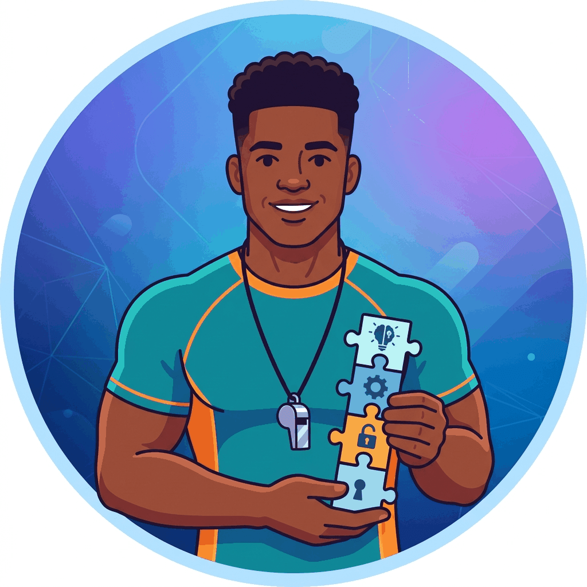
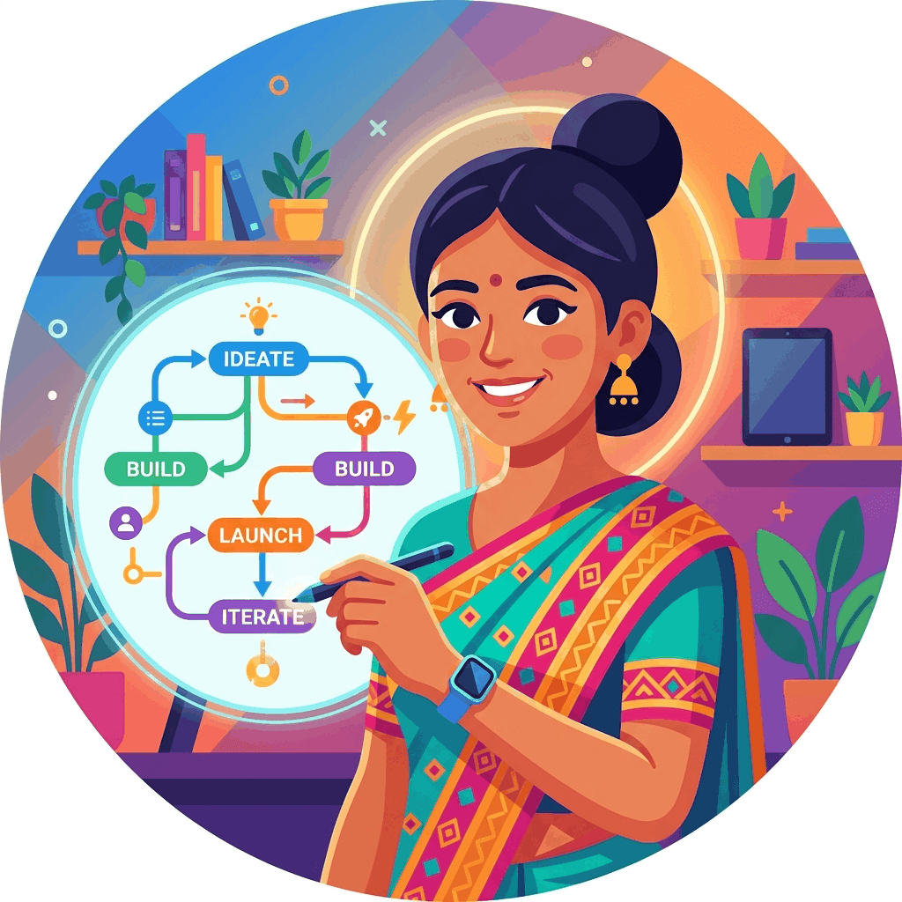
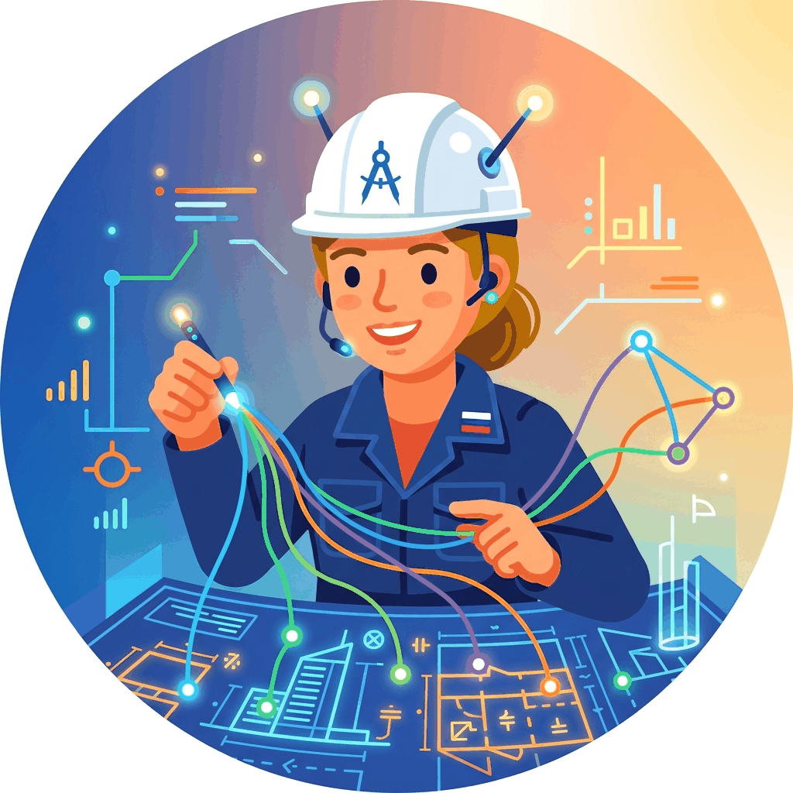
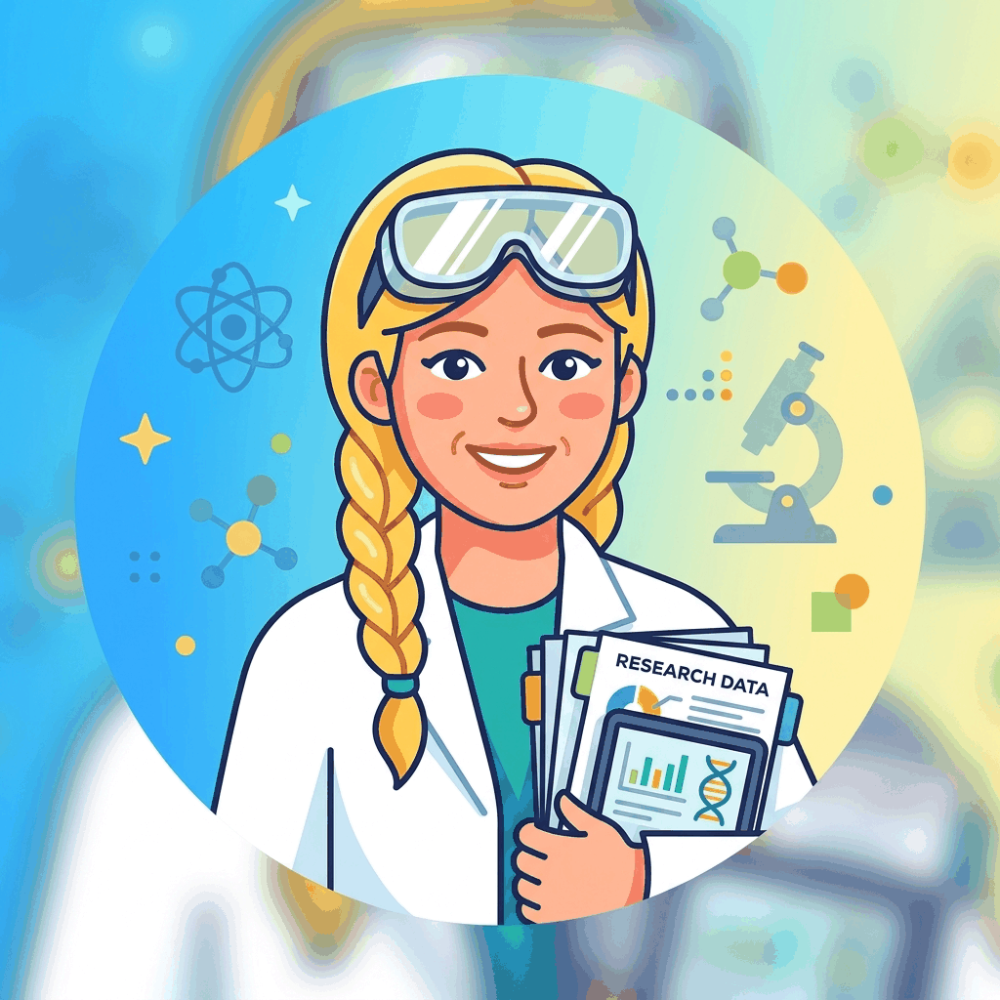
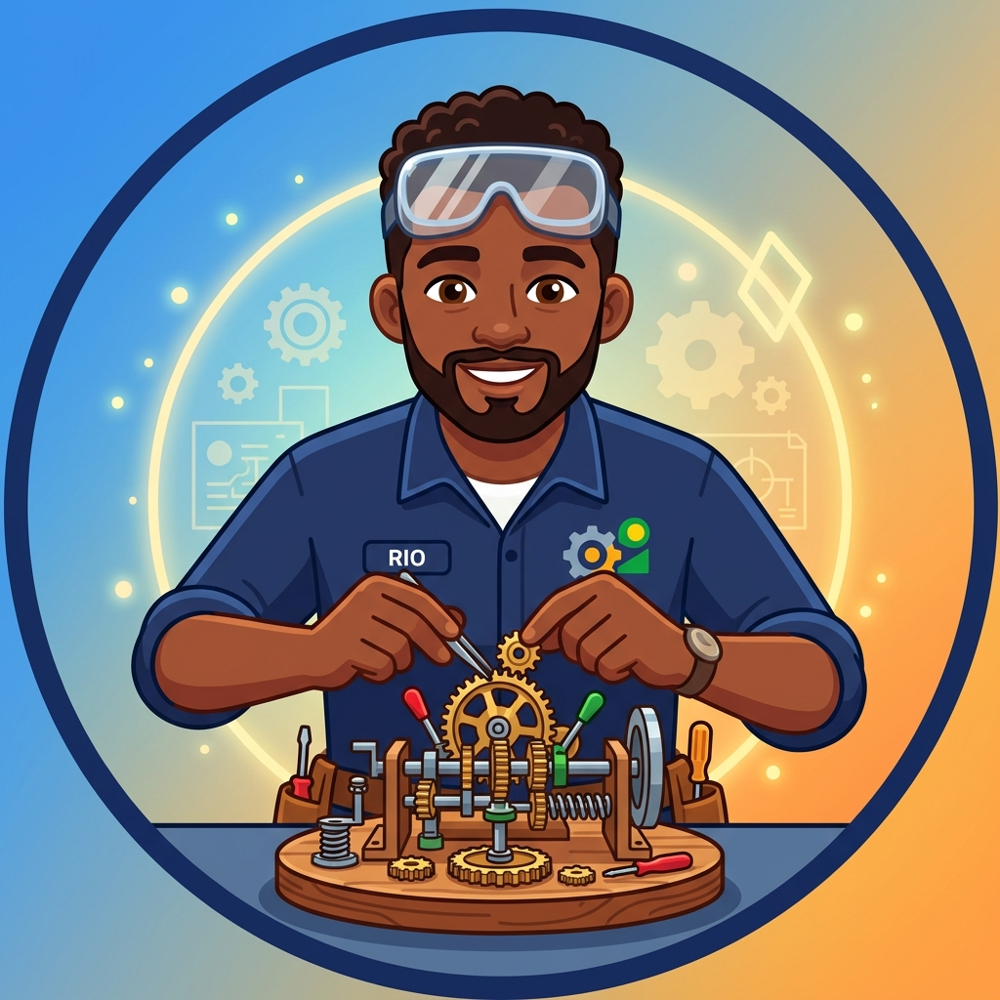
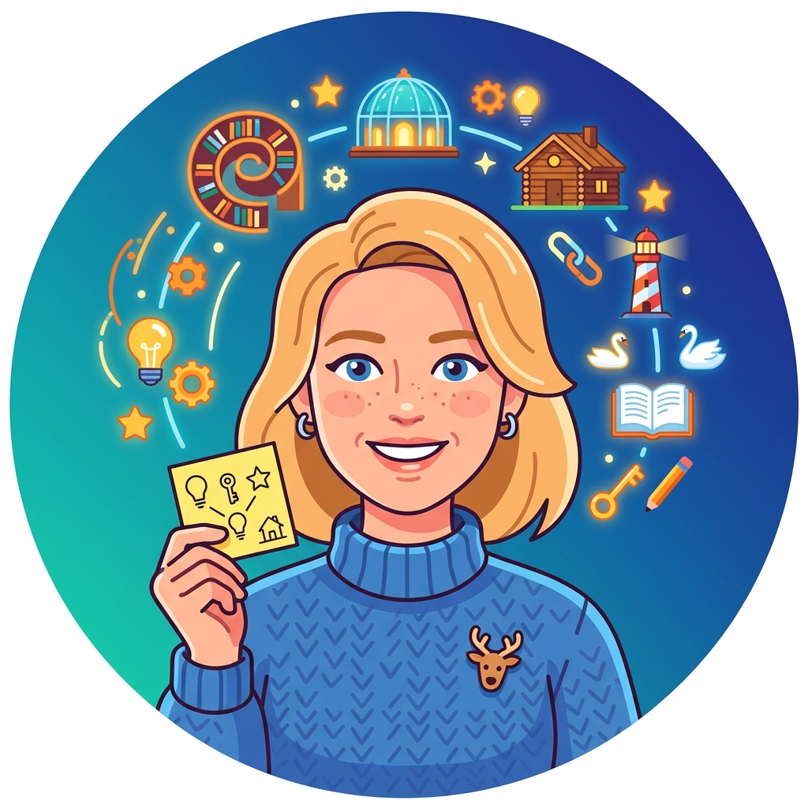
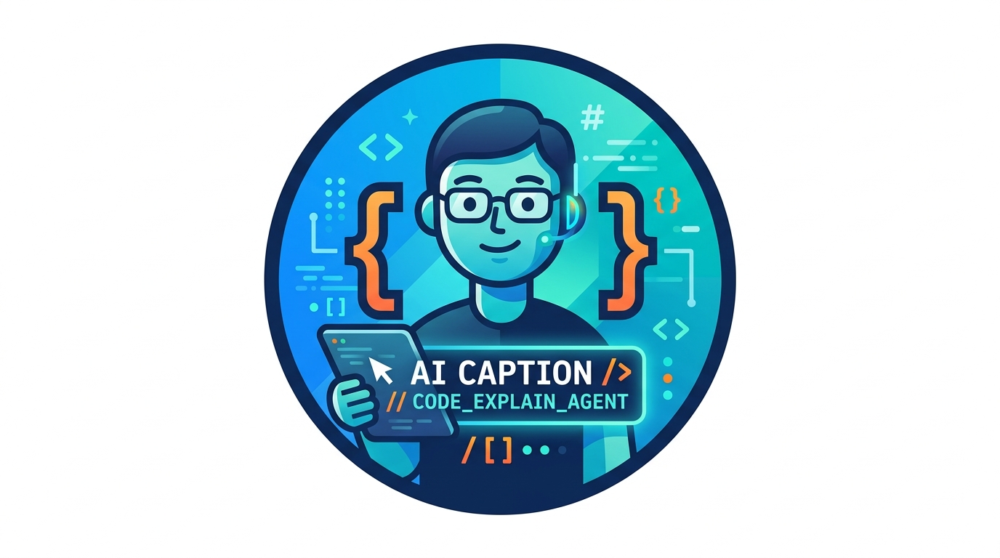

Meet the Agents
Every agent brings a unique specialization to chapter production.
Alex Rivera
#00
Chapter Lead
Coordinates the entire chapter production. Reads the module outline, defines scope, creates the outline, and makes the final integration call. Every other agent reports to Alex.
Dr. Maya Chen
#01
Curriculum Alignment Reviewer
Validates that the chapter covers every required topic at the right depth. Checks prerequisites, sequencing, and alignment with learning objectives. Flags gaps and suggests additions.
Prof. Elias Hartwell
#02
Deep Explanation Designer
Plans what, why, how, and when for every concept. Ensures no idea is stated without justification. Designs layered explanations from intuition to formalism.
Dr. Sana Okafor
#03
Teaching Flow Reviewer
Reviews lecture order, transitions, and pacing. Ensures each section flows naturally into the next. Identifies abrupt jumps and suggests bridge paragraphs.
Jamie Torres
#04
Student Advocate
Represents the confused, overwhelmed, or skeptical student. Questions every assumption, asks "but why?", and demands clearer explanations. Fights for accessibility.
Dr. Aisha Patel
#05
Cognitive Load Optimizer
Monitors how many new concepts are introduced per section. Detects working memory overload and suggests chunking, scaffolding, or reordering to reduce mental strain.
Lina Morales
#06
Example and Analogy Designer
Creates concrete examples and vivid analogies for every abstract concept. Ensures each analogy is accurate, not misleading, and bridges from familiar to unfamiliar.

Marcus Webb
#07
Exercise Designer
Designs exercises at multiple cognitive levels: recall, application, analysis, and creation. Ensures progressive difficulty and provides detailed solutions.
Kai Nakamura
#08
Code Pedagogy Engineer
Writes runnable code examples with clear comments and expected output. Ensures code uses current libraries, follows best practices, and teaches incrementally.

Priya Kapoor
#09
Visual Learning Designer
Creates SVG diagrams, flowcharts, and visual explanations for complex concepts. Ensures every diagram has captions, alt text, and consistent styling.
Dr. Leo Strauss
#10
Misconception Analyst
Identifies common misconceptions students will have. Designs "trap and correct" moments that surface wrong intuitions and replace them with correct mental models.
Dr. Ruth Castellano
#11
Fact Integrity Reviewer
Verifies every factual claim, statistic, date, and attribution. Flags unverified statements, outdated numbers, and missing citations. Provides corrected text.
Kenji Watanabe
#12
Terminology and Notation Keeper
Ensures the same concept uses the same name everywhere. Catches synonym drift, inconsistent capitalization, and notation conflicts.

Elena Volkov
#13
Cross-Reference Architect
Builds connections between chapters. Adds forward references, backward links, and "recall from Module X" pointers. Ensures no concept floats in isolation.
Olivia March
#14
Narrative Continuity Editor
Maintains a coherent story thread across the chapter. Ensures promises made in the introduction are fulfilled. Checks that foreshadowing pays off.
Max Sterling
#15
Style and Voice Editor
Enforces a consistent, authoritative but approachable tone. Catches passive voice, hedging, overly long sentences, and em dashes. Provides rewritten versions.
Ravi Chandrasekaran
#16
Engagement Designer
Adds hooks, curiosity gaps, and "what if" questions. Transforms flat exposition into engaging prose that makes the reader want to continue.
Catherine Park
#17
Senior Developmental Editor
Final quality gate for content and structure. Reviews at the macro level: does the chapter tell a coherent story? Does it deliver on its promise? Also detects duplicate content across sections and chapters, flagging redundancy for consolidation.

Prof. Ingrid Holm
#18
Research Scientist and Frontier Mapper
Connects textbook content to landmark papers and active research. Adds "Why Does This Work?", "Open Question", and "Paper Spotlight" sidebars.
Dr. Henrik Larsson
#19
Structural Refactoring Architect
Reviews chapter and book-level organization. Detects misplaced prerequisites and structural anti-patterns. Proposes split, merge, or move operations. Also maintains the book index and table of contents, ensuring navigation stays consistent after structural changes.
Harper Quinn
#20
Content Update Scout
Searches externally for missing topics, outdated content, and competitive gaps. Classifies recommendations as essential now, useful soon, or trend watch. Also audits the tech stack (libraries, frameworks, APIs) for deprecated or superseded tools.
Dr. Tomas Eriksen
#21
Self-Containment Verifier
Checks that every concept has its prerequisites available in the book. Identifies missing definitions or background that force readers to look elsewhere.
Zara Kingsley
#22
Opening and Hook Designer
Designs compelling chapter titles, section titles, and openings. Rewrites first pages for strong motivation and concrete promises. Ensures every chapter hooks the reader from the first sentence.
Jordan Blake
#23
Project Catalyst Designer
Turns material into exciting project ideas and "you could build this" moments. Makes the book feel action-oriented, not purely academic.
Yuki Tanaka
#24
Aha-Moment Engineer
Finds places where one striking example, contrast, or experiment creates instant understanding. Ensures every major concept has a "click" moment.
Ines Delacroix
#26
Visual Identity Director
Ensures consistent figure styles, callout types, icon systems, and layout patterns. Makes the book visually distinctive and recognizable across all chapters.

Rio Santos
#28
Demo and Simulation Designer
Proposes interactive demos, experiments, sliders, and simulations. Makes ideas tangible through hands-on play and "modify and observe" exercises.

Mika Johansson
#29
Memorability Designer
Adds mnemonics, memorable phrases, compact schemas, and recurring patterns. Ensures students retain material long after reading.
Victor Blackwell
#30
Skeptical Reader
Challenges whether the chapter is genuinely impressive and distinctive. Flags generic, flat, or forgettable content and pushes for sharper differentiation.
Clara Bright
#31
Prose Clarity Editor
Rewrites dense passages into simpler language, improves sentence rhythm and flow, and detects unnecessary jargon. Combines plain-language rewriting, flow smoothing, and jargon gatekeeping in one clarity pass.
Sam Cortez
#32
Readability and Pacing Editor
Restructures long explanations into smaller reading units and detects places where reader attention drops. Combines micro-chunking, signposting, and fatigue detection in a single readability pass.
Iris Fontaine
#36
Illustrator
Generates 5 to 8 humorous illustrations per chapter using the Gemini API. Creates chapter openers, visual metaphors, and "what could go wrong" scenes with captions.
Quentin Ashford
#37
Epigraph Writer
Crafts a witty, humorous opening quote for each chapter. Each epigraph reads like words of wisdom with a twist, attributed to a fictional AI agent.
Nadia Okonkwo
#38
Application Example Agent
Inserts 3 to 6 "Practical Example" boxes per chapter: concise mini-stories from industry practice featuring real decision-makers facing genuine trade-offs.
Ziggy Marlowe
#39
Fun Injector
Adds up to 2 humorous moments per chapter: witty analogies, self-aware asides, or playful observations that reinforce concepts while making reading enjoyable.
Dr. Margot Reeves
#40
Bibliography Agent
Adds a comprehensive, hyperlinked bibliography to each chapter with foundational papers, key books, tools, tutorials, and datasets. Every entry includes a clickable URL and a one-sentence annotation explaining its relevance.

Dr. Audra Finch
#41
Meta Agent (Quality Auditor)
Reviews finished chapters to identify where other agents failed or underperformed. Scores each agent's output, diagnoses root causes, and proposes specific skill improvements. Never edits files directly; presents an update plan for human approval.
Director Morgan Blackwood
#42
Chapter Controller
Inspects finished chapters for quality gaps, identifies which specialist agents can fix them, dispatches targeted improvement requests, and routes all proposed changes through Alex Rivera (Chapter Lead, #00) for approval. The final quality gate before publication.
Inspector Quinn Harlow
#43
Publication QA Specialist
The final gatekeeper before publication. Opens every page in a headless browser via Playwright, verifies rendering at desktop and mobile widths, checks visual consistency across all chapters, runs the full pre-publication checklist, and produces a pass/fail report. Catches layout breaks, missing images, and styling inconsistencies that code-level analysis misses.

Dr. Celeste Moreau
#44
Figure and Diagram Fact Checker
Verifies every figure, diagram, SVG, and visual element for factual accuracy. Checks architecture diagrams against authoritative sources, ensures all visuals have descriptive captions and text references, fixes incorrect labels and numbering, and flags diagrams that misrepresent the concepts they illustrate.

Felix Drummond
#45
Code Caption and Reference Agent
Ensures every code block in every chapter has a properly numbered caption and is referenced in the surrounding prose. Adds descriptive captions below code fragments and creates text callouts so readers never encounter unexplained code.
Dr. Wren Calloway
#46
Hands-On Lab Designer
Designs and inserts structured, guided hands-on labs at the end of each chapter section. Creates substantial coding exercises (30 to 90 minutes) that let readers build something real using the concepts from the chapter, complete with starter code and solution walkthroughs.
Production Pipeline
Each chapter flows through 22 phases. Parallel phases run their agents simultaneously for speed.
| Phase | Name | Agents |
|---|---|---|
| 0 | Setup | #00 Alex Rivera (Chapter Lead) Sequential |
| 1 | Planning | #01 Dr. Maya Chen (Curriculum Alignment) #02 Prof. Elias Hartwell (Deep Explanation) #03 Dr. Sana Okafor (Teaching Flow) Parallel |
| 2 | Building | #06 Lina Morales (Examples/Analogies) #07 Marcus Webb (Exercises) #08 Kai Nakamura (Code Pedagogy) #09 Priya Kapoor (Visual Learning) #46 Dr. Wren Calloway (Lab Designer) Parallel |
| 3 | Structure | #19 Dr. Henrik Larsson (Structural Architect) Sequential |
| 4 | Self-Contain | #21 Dr. Tomas Eriksen (Self-Containment) Sequential |
| 5 | Engage | #22 Zara Kingsley (Openings/Hooks) #23 Jordan Blake (Project Catalyst) #24 Yuki Tanaka (Aha-Moments) #28 Rio Santos (Demos/Simulations) #29 Mika Johansson (Memorability) Parallel |
| 6 | Clarity | #31 Clara Bright (Prose Clarity) #32 Sam Cortez (Readability/Pacing) Parallel |
| 7 | Review | #04 Jamie Torres (Student Advocate) #05 Dr. Aisha Patel (Cognitive Load) #10 Dr. Leo Strauss (Misconceptions) #18 Prof. Ingrid Holm (Research/Frontier) Parallel |
| 8 | Integrity | #11 Dr. Ruth Castellano (Fact Integrity) #12 Kenji Watanabe (Terminology) #13 Elena Volkov (Cross-References) Parallel |
| 9 | Visual ID | #26 Ines Delacroix (Visual Identity) Sequential |
| 10 | Illustrate | #36 Iris Fontaine (Illustrator) Sequential |
| 11 | Polish | #14 Olivia March (Narrative Continuity) #15 Max Sterling (Style/Voice) #16 Ravi Chandrasekaran (Engagement) #17 Catherine Park (Senior Editor) Parallel |
| 12 | Enrich | #37 Quentin Ashford (Epigraphs) #38 Nadia Okonkwo (Practical Examples) #39 Ziggy Marlowe (Fun Injector) #40 Dr. Margot Reeves (Bibliography) Parallel |
| 13 | Frontier | #20 Harper Quinn (Content Scout) Sequential |
| 14 | Challenge | #30 Victor Blackwell (Skeptical Reader) Sequential |
| 15 | Integration | #00 Alex Rivera (Chapter Lead) Sequential |
| 16 | Final Illustration | #36 Iris Fontaine (Illustrator) Sequential |
| 17 | Validation | #00 Alex Rivera (Chapter Lead) Sequential |
| 18 | Meta-Review | #41 Dr. Audra Finch (Meta Agent) Sequential |
| 19 | Control | #42 Director Morgan Blackwood (Controller) Sequential |
| 20 | Fig and Code Verify | #44 Dr. Celeste Moreau (Figure Fact Checker) #45 Felix Drummond (Code Captions) Parallel |
| 21 | Pub QA | #43 Inspector Quinn Harlow (Publication QA) Sequential |
Pipeline Flow
The high-level progression from start to finish.
Setup
▶
Planning
▶
Building
▶
Structure
▶
Self-Contain
▶
Engage
▶
Clarity
▶
Review
▶
Integrity
▶
Visual ID
▶
Illustrate
▶
Polish
▶
Epigraph + Examples + Fun
▶
Frontier
▶
Challenge
▶
Integration
▶
Final Illustration
▶
Validation
▶
Meta-Review
▶
Control
▶
Fig + Code Verify
▶
Pub QA